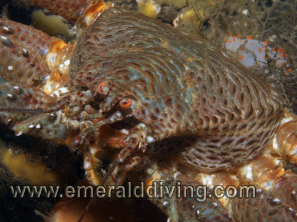
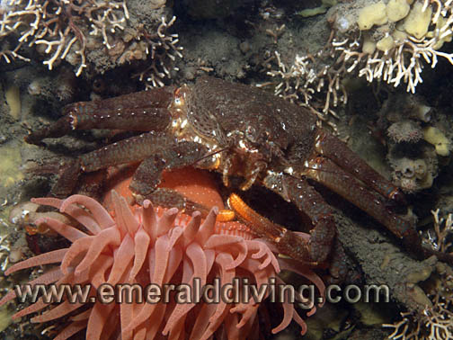
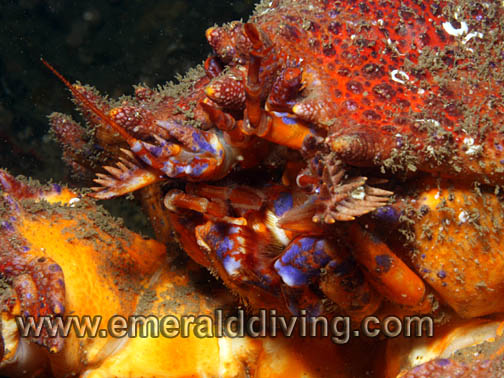
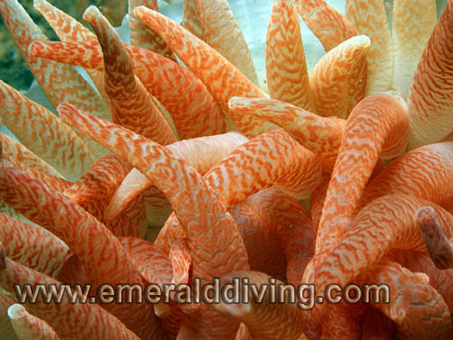
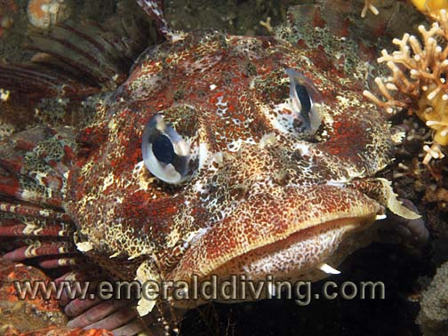

©2010 Emerald Diving, All Rights Reserved
Dive Reports
Emerald Diving
Explore the coastal and inland waters of
Washington and BC
Explore the coastal and inland waters of
Washington and BC
Emerald Diving
Explore the coastal and inland waters of
Washington and BC
Explore the coastal and inland waters of
Washington and BC
Emerald Diving
Explore the coastal and inland waters of
Washington and BC
Explore the coastal and inland waters of
Washington and BC


The thing about diving in late fall and winter months in the Puget Sound area is that you just never know what to expect weather wise. It’s all about trying to time the fronts moving through the Pacific Northwest. We tried to get out to a local site in Puget Sound the week before, but a nasty front resulted in 4’ waves and made us rethink our weekend’s dive plans. I ended up doing a nightdive on a well protected shoreline instead.
The day of this particular San Juan Island trip started ominously enough, with a stiff breeze out of the north as we headed out of Deception Pass to cross Rosario Strait. Although the wind was manageable, the question was would it get better throughout the day - or worse. We were offered brief sanctuary from the north wind when we made south Lopez Island. My hope was that our targeted primary dive site for this trip, located on the southwest side of Lopez Island, should be somewhat protected from the northerly wind. However, the wind had other ideas and changed to a westerly as we rounded Iceberg Point and closed in on our intended destination. When we arrived at the west side of Long Island, the wind was blowing into the dive site making it a bit difficult to read the current. However, by the time we completed our first dive, the wind subsided and the sunshine took center stage to make it more like a June day rather than a day in November - until we were reminded that it is still late fall as the sun set at 4:30 PM.
The day of this particular San Juan Island trip started ominously enough, with a stiff breeze out of the north as we headed out of Deception Pass to cross Rosario Strait. Although the wind was manageable, the question was would it get better throughout the day - or worse. We were offered brief sanctuary from the north wind when we made south Lopez Island. My hope was that our targeted primary dive site for this trip, located on the southwest side of Lopez Island, should be somewhat protected from the northerly wind. However, the wind had other ideas and changed to a westerly as we rounded Iceberg Point and closed in on our intended destination. When we arrived at the west side of Long Island, the wind was blowing into the dive site making it a bit difficult to read the current. However, by the time we completed our first dive, the wind subsided and the sunshine took center stage to make it more like a June day rather than a day in November - until we were reminded that it is still late fall as the sun set at 4:30 PM.
South Lopez Island: November 27th, 2009
Our primary targeted site for the trip was the first dive of the day - the amazing 140-180’ tall wall on Long Island. This dive continues to be one of my favorite dives in the San Juans - heck, in all the Pacific Northwest. Colorful and dense invertebrates colonies and rugged vertical structure are enough to make my think I might be in Browning Pass or at Neah Bay. In addition, this wall is relatively clean of silt and usually affords wonderful visibility - and today’s visibility of 35 feet was no exception. As I had two relatively new San Juan divers with me today (Margaret and Owen), I thought I would start them off with an easy dive where the biggest concern is not to get lost in all the color and critters. Diving on the flood, we had very little current to contend with. We all came up smiling after this dive.
I shot video on my dive - testing out the new ContourHD 1080p camera in the H20V housing and a new hand-mount for my HID light coupled with a video reflector. The system was very easy to use and very effective. I hope to have some video to share later on. Highlighting the dive were some fantastic Puget Sound king crabs - one feeding on the remnants of a deceased octopus. Another highlight was a large school of Puget Sound rockfish leisurely feeding in the light current. The school would approach within 6 feet on me at times, then back off.
I shot video on my dive - testing out the new ContourHD 1080p camera in the H20V housing and a new hand-mount for my HID light coupled with a video reflector. The system was very easy to use and very effective. I hope to have some video to share later on. Highlighting the dive were some fantastic Puget Sound king crabs - one feeding on the remnants of a deceased octopus. Another highlight was a large school of Puget Sound rockfish leisurely feeding in the light current. The school would approach within 6 feet on me at times, then back off.

Nose to nose with a scale crab - an infrequent encounter during most of my Pacific Northwest diving escapades. On this particular dive at Sares head, I counted four of these unusual lihoid crabs.

Diamondback nudibranchs enjoy foraging upon the rich field of bryozoans and other invertebrates on the wall at Davidson Rocks.
I checked out Whale Rocks as a potential second dive site, but the surrounding area was relatively shallow and un-interesting looking on the depth sound. A colony of stellar sealions seemed fairly put out that we were even considering diving near their roost. I then decided to take a chance and head back to Davidson Rocks, which is an offshore rock pinnacle that comes within 20 feet of the surface. This rock formation sits between Rosario Strait and the Strait of Juan de Fuca, so it sees its share of current. The west side of the pinnacle is an impressive 180’ wall that gets hammered by the flooding current. An ebbing current flows over the wall from the northeast and waterfalls. When we got to the navagation marker that marks Davidson Rocks, the current was DEAD calm as indicated by the thick grove of bull kelp laying motionless on the surface. I entered the water near the navigation marker and submerged 20 feet to the shelf above the wall. I followed a ravine in the shelf due west. I did not have to go very far until the shelf gave way to a slope, then quickly a verticality. To the north of the ravine was a wall covered with thousands of white giant metridium and crimson anemones. I poked around a seemingly endless field of anemones in the 35 foot visibility and found Puget Sound kings crabs, mosshead warbonnets, and candystripe shrimp. Twenty minutes into the dive, Mother Nature threw the switch to start the waterfalling current. I made my way back to the ravine I had descended through, and kept close tabs on the current. The current did not intensify too much, so I took my time exploring the ravine before finally working my way up the ravine and on top of the shelf. I found a rock to duck behind in 20 feet of water to fulfill my safety stop obligation. By the time I surfaced, most of the kelp was submerged and whipping in the current. A very nice dive, although I would have preferred to start this dive about 40 minutes earlier.
As Margaret and Owen were sensibly not up for battling waterfalling currents on a 180 foot wall, they opted to dive Sares Head as our final destination of the day. Although an impressive wall in terms of ruggedness, height, and length, this site is a victim of silt laden waters flowing from nearby rivers trough Deception Pass. Visibility rarely exceeds 15 feet at this site, and the entire wall is smothered in a blanket of silt. However, despite the silt, invertebrates of all sorts prosper here. Most noticeable for me on this dive was the myriad of swimming scallops, four scale crabs (a relatively rare find for me), and a juvenile decorated warbonnet. I have been trying to get a body shot of a decorated warbonnet since I started this website, however this shy fish has opted to only provided me head shots over the last year. I found a little warbonnet well camouflaged against a silty background on a small shelf and managed to get one frame before it darted for cover. It wasn’t a great shot for ID purposes, but it will do for now. Vis at times opened up to 20 feet at the deeper depths during the dive, which is good for Sares Head.
We scampered back to the dock at Cornet Bay as the sun set at around 4:30. We weren’t 10 minutes into the drive home before we were planning our next excursion north. Diving the San Juans always leave me wanting more.
As Margaret and Owen were sensibly not up for battling waterfalling currents on a 180 foot wall, they opted to dive Sares Head as our final destination of the day. Although an impressive wall in terms of ruggedness, height, and length, this site is a victim of silt laden waters flowing from nearby rivers trough Deception Pass. Visibility rarely exceeds 15 feet at this site, and the entire wall is smothered in a blanket of silt. However, despite the silt, invertebrates of all sorts prosper here. Most noticeable for me on this dive was the myriad of swimming scallops, four scale crabs (a relatively rare find for me), and a juvenile decorated warbonnet. I have been trying to get a body shot of a decorated warbonnet since I started this website, however this shy fish has opted to only provided me head shots over the last year. I found a little warbonnet well camouflaged against a silty background on a small shelf and managed to get one frame before it darted for cover. It wasn’t a great shot for ID purposes, but it will do for now. Vis at times opened up to 20 feet at the deeper depths during the dive, which is good for Sares Head.
We scampered back to the dock at Cornet Bay as the sun set at around 4:30. We weren’t 10 minutes into the drive home before we were planning our next excursion north. Diving the San Juans always leave me wanting more.


Puget Sound king crabs were companions on two of my three dives on this day. These Pacific Northwest battle tanks often frequent the walls at Long Island and Davidson Rocks. The bottom pic is a cloe-up of the crab's face.

Candystripe shrimp taking refuge at the base of a crimson anemone at Davidson Rocks.

A heart crab perched on the wall at Davidson Rocks.


Swimming scalop sahring space with leather bryozoan.



Mosshead warbonnet (right) was sighted at Davidson Rocks.
Left: Scale crab riding a crimson anemone at Sares Head.
Right: Gorgeous formations of feather coralline algae lines the top of the shelf at Davidson Rocks.
Bottom: Red Irish lord lies motionless to ambush its prey on the wall at Sares Head.
Right: Gorgeous formations of feather coralline algae lines the top of the shelf at Davidson Rocks.
Bottom: Red Irish lord lies motionless to ambush its prey on the wall at Sares Head.
Left: Business end of a Davidson Rock crimson anemone.
Decorated warbonnet was photographed at Sares Head.
